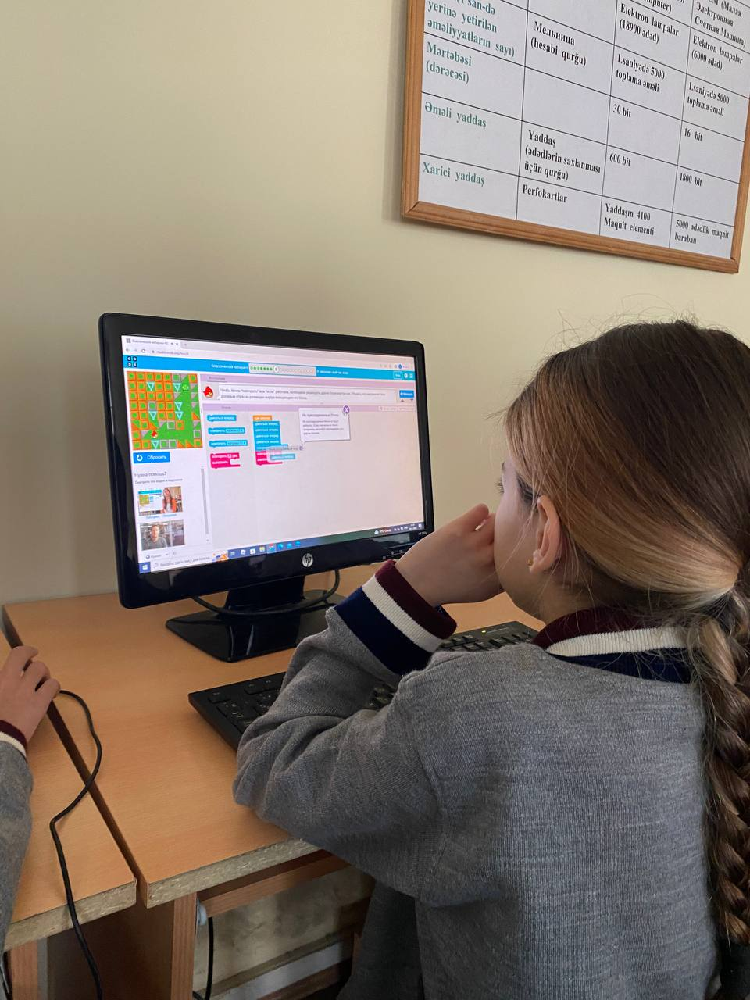

About our project
Our project...
Our project...
Our project...
Our Hour Of Code
We, the ADA students Melek Topchu, Ravan Abdinli, Emil Mirzazada, and Suel Heybatova, visited Baku Secondary School No. 42 on November 14, 2022, at 9 a.m., in an effort to demystify "coding," demonstrate that anyone can learn the fundamentals, and increase interest in the field of computer science. Communicating in Azerbaijani was a revelation in terms of both teaching and connecting with the language, as well as looking at the material we had studied ourselves from a new perspective. Staff and students from class 5"E" not only welcomed us warmly, but also effectively accomplished the assigned duties.